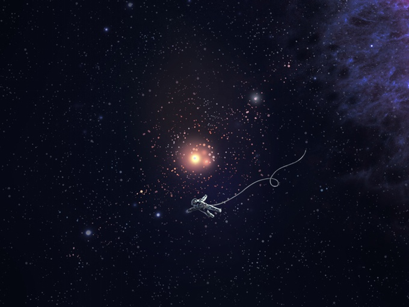

Tearing the ship apart
Trying to remove all the rough metal plates is not easy but somehow you managed to get a few up. So far you can't find anything and you are removing every plate, somehow you didn't notice that the abandoned spaceship started to break apart completely. You panic trying to find a way back to your ship but its too far. You find yourself floating away, farther and farther into the dark abyss while fear consumes you about what will happen next.

DEAD END: Floating through space